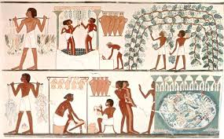

The harvesting, processing, and consuming of seafoods are ancient practices with archaeological evidence dating back well into the Paleolithic.Findings in a sea cave at Pinnacle Point in South Africa indicate Homo sapiens (modern humans) harvested marine life as early as 165,000 years ago,while the Neanderthals, an extinct human species contemporary with early Homo sapiens, appear to have been eating seafood at sites along the Mediterranean coast beginning around the same time.Isotopic analysis of the skeletal remains of Tianyuan man, a 40,000-year-old anatomically modern human from eastern Asia, has shown that he regularly consumed freshwater fish.Archaeology features such as shell middens, discarded fish bones and cave paintings show that sea foods were important for survival and consumed in significant quantities. During this period, most people lived a hunter-gatherer lifestyle and were, of necessity, constantly on the move. However, where there are early examples of permanent settlements (though not necessarily permanently occupied) such as those at Lepenski Vir, they are almost always associated with fishing as a major source of food.
The ancient river Nile was full of fish; fresh and dried fish were a staple food for much of the population.The Egyptians had implements and methods for fishing and these are illustrated in tomb scenes, drawings, and papyrus documents. Some representations hint at fishing being pursued as a pastime.
Fishing scenes are rarely represented in ancient Greek culture, a reflection of the low social status of fishing. However, Oppian of Corycus, a Greek author wrote a major treatise on sea fishing, the Halieulica or Halieutika, composed between 177 and 180. This is the earliest such work to have survived to the modern day. The consumption of fish varied in accordance with the wealth and location of the household. In the Greek islands and on the coast, fresh fish and seafood (squid, octopus, and shellfish) were common. They were eaten locally but more often transported inland. Sardines and anchovies were regular fare for the citizens of Athens. They were sometimes sold fresh, but more frequently salted. A stele of the late 3rd century BCE from the small Boeotian city of Akraiphia, on Lake Copais, provides us with a list of fish prices. The cheapest was skaren (probably parrotfish) whereas Atlantic bluefin tuna was three times as expensive.Common salt water fish were yellowfin tuna, red mullet, ray, swordfish or sturgeon, a delicacy which was eaten salted. Lake Copais itself was famous in all Greece for its eels, celebrated by the hero of The Acharnians. Other fresh water fish were pike-fish, carp and the less appreciated catfish.
Pictorial evidence of Roman fishing comes from mosaics.At a certain time the goatfish was considered the epitome of luxury, above all because its scales exhibit a bright red color when it dies out of water. For this reason these fish were occasionally allowed to die slowly at the table. There even was a recipe where this would take place in garo, in the sauce. At the beginning of the Imperial era, however, this custom suddenly came to an end, which is why mullus in the feast of Trimalchio (see the Satyricon) could be shown as a characteristic of the parvenu, who bores his guests with an unfashionable display of dying fish.
In medieval times, seafood was less prestigious than other animal meats, and often seen as merely an alternative to meat on fast days. Still, seafood was the mainstay of many coastal populations. Kippers made from herring caught in the North Sea could be found in markets as far away as Constantinople. While large quantities of fish were eaten fresh, a large proportion was salted, dried, and, to a lesser extent, smoked. Stockfish, cod that was split down the middle, fixed to a pole and dried, was very common, though preparation could be time-consuming, and meant beating the dried fish with a mallet before soaking it in water. A wide range of mollusks including oysters, mussels and scallops were eaten by coastal and river-dwelling populations, and freshwater crayfish were seen as a desirable alternative to meat during fish days. Compared to meat, fish was much more expensive for inland populations, especially in Central Europe, and therefore not an option for most.
Modern knowledge of the reproductive cycles of aquatic species has led to the development of hatcheries and improved techniques of fish farming and aquaculture. Better understanding of the hazards of eating raw and undercooked fish and shellfish has led to improved preservation methods and processing.
 |
 |